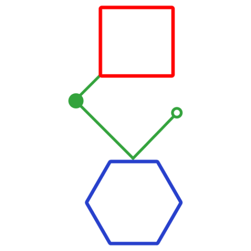
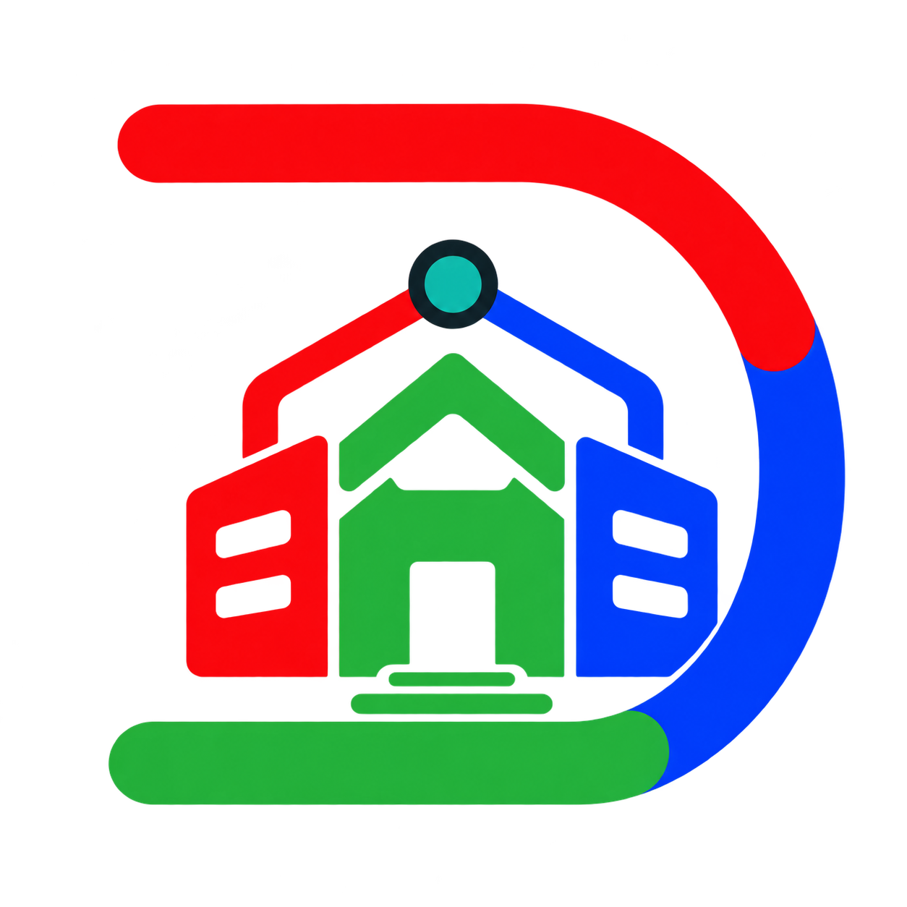
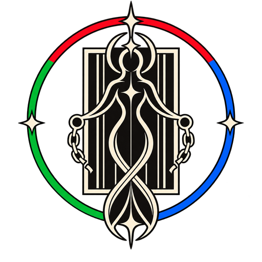
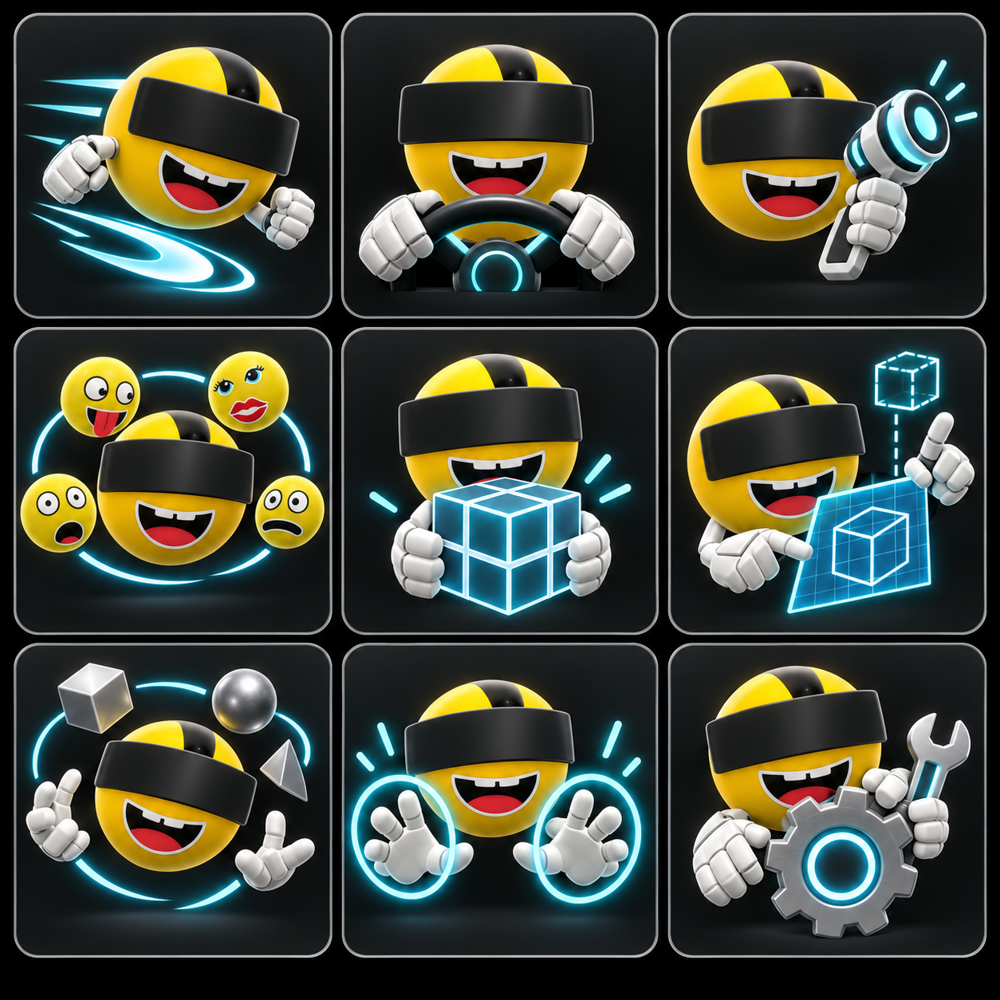
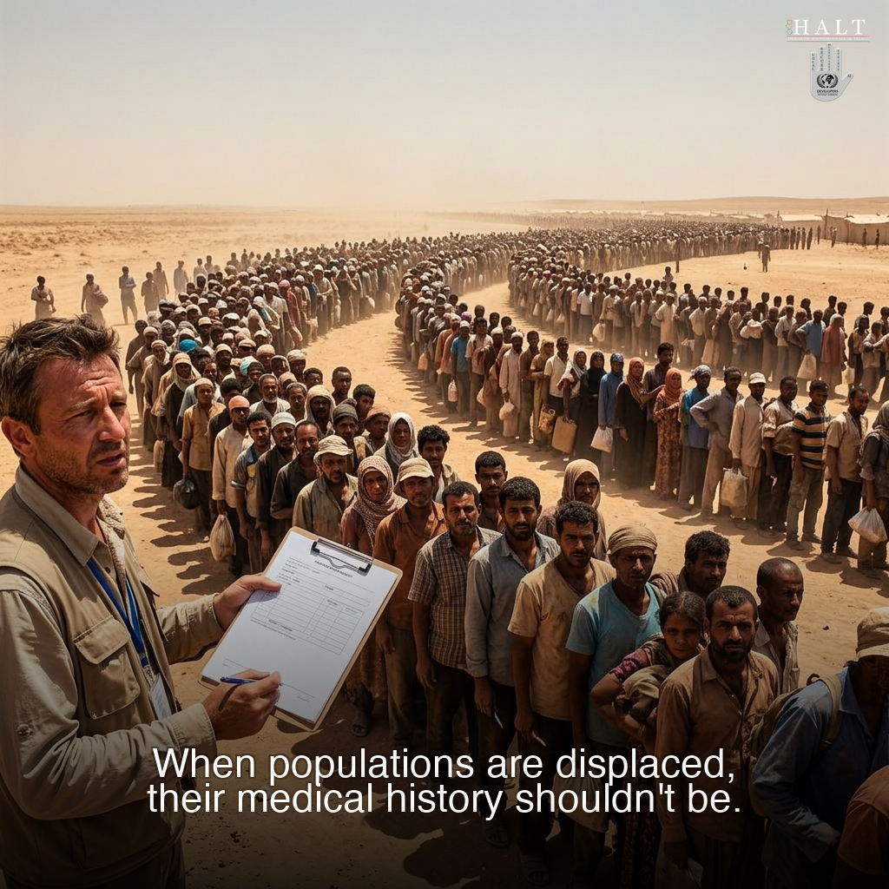
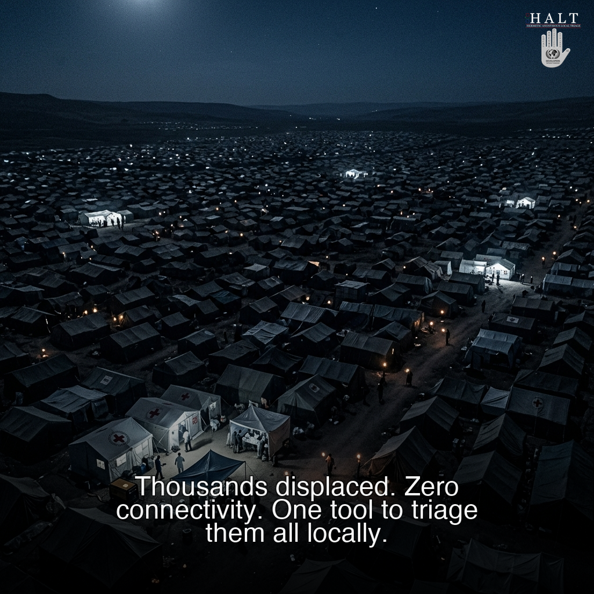
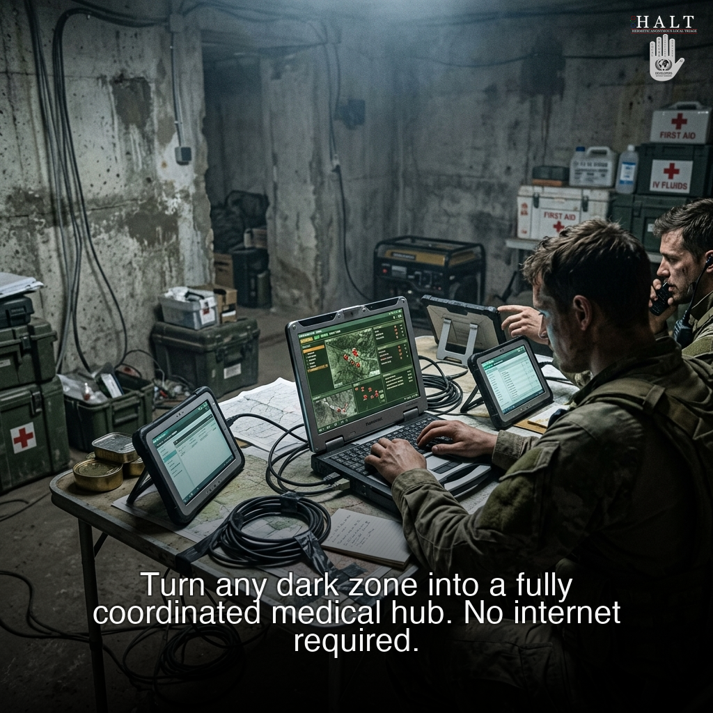
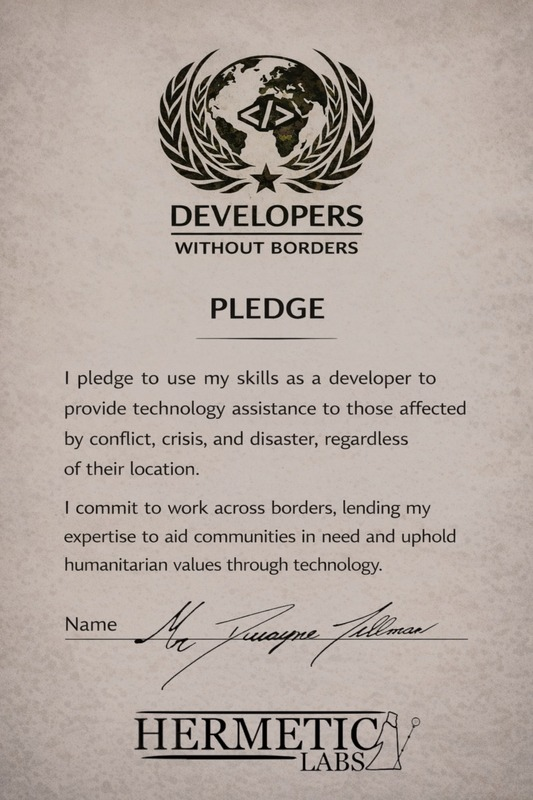

Local runtime
Keep essential processing and state close to the people and systems that depend on it, with hardened execution and recovery paths.

Building local-first systems
for high-stakes environments
Hermetic Labs ecosystem
Products and research with clear operational roles. Each surface is separated by purpose, maturity, and responsibility.
Spatial, source-backed project understanding for communities living alongside data-center development.
A sealed educational computing environment designed around institution-approved material and explicit operating boundaries.
A modular Unreal toolkit for movement, physical interaction, vehicles, intelligence, hands, tools, and connected virtual worlds.
Lean, offline coordination software being evaluated for conflict zones and disaster response.
The local-first operating foundation behind governed, resilient Hermetic Labs systems.
The public Exchange for discovering and evaluating modules built around the EVE-OS ecosystem.
A clearly labeled research space for exploring quantum concepts and their relationship to local-first orchestration.
Civic infrastructure · in development

DATA CENTER DIRECT
One spatial, source-backed view for understanding a data-center project: what is proposed, who is responsible, what supports a claim, and what still needs an answer.
Learn more →Governed learning · early research
Abbé Faria explores a sealed educational computing environment for established U.S. correctional technology platforms. Its first proposed application is an institution-governed learning assistant operating only from approved material, with a broader learning, re-entry, and immersive workspace beneath it.
Research project · no vendor relationship, deployment, or approved pilot is implied.
Open the public partner brief →

Embodied worlds · Unreal toolkit
VRF is a modular toolkit for embodied Unreal experiences. Teams can choose the capabilities they need—movement, physical interaction, vehicles, intelligence, hands, and tools—then compose them into a connected world.
Explore VRF →In the Field
HALT (Hermetic Anonymous Local Triage) is our philanthropic initiative — a free, closed-beta, offline medical coordination system designed for conflict zones and disaster response. Source access is available selectively to qualified NGOs and research institutions. It shares our local-first philosophy but is an independent system, built lean for field evaluation where every megabyte matters.





Core platform
EVE-OS is the local-first foundation behind governed Hermetic Labs systems. It keeps execution close to the work, makes connections explicit, and preserves the evidence needed for human review—even when infrastructure or connectivity is imperfect.
Keep essential processing and state close to the people and systems that depend on it, with hardened execution and recovery paths.
Move only approved, minimized information through explicit interfaces, with offline-first synchronization when connections return.
Apply declared boundaries, preserve traceable records, and keep accountable people at consequential checkpoints.
Evaluation access
EVE-OS is available through selected evaluation and partner pathways for organisations working in high-stakes or regulated environments.
Hermetic Labs Exchange
A growing ecosystem of EVE-OS modules — from connectors and workflow tools to domain-specific compliance-readiness modules, enterprise integrations, and specialized components. Browse, evaluate, and deploy modules built for regulated and high-performance environments.
Visit the Exchange →Infrastructure for a World Under Pressure
Sovereign & Government Ready
CAGE Code: 148C3
Defense supply chain ready
Enterprise integration ready

Builders Work Overtime
When systems fail, builders step in. Hermetic Labs develops resilient, sovereign, and compliance-native AI systems for healthcare, emergency response, and real-world crisis environments.
We believe that when destruction accelerates, construction must move faster.
Developers Without Borders is our commitment to deploy technology where crisis, conflict, and systemic fragility demand resilience.
Take the Pledge & Download CertificateResearch & White Papers
These papers inform the design and operation of EVE-OS
Interactive 3D Bloch Sphere visualisation and multi-qubit simulation console
Explore →How distributed inference supports long-term workforce stability
Download PDF ↓Architectural constraints for HIPAA, NHS DTAC, and FDA Readiness
Download PDF ↓Data sovereignty, accountability, and duty in high-stakes systems
Download PDF ↓Contact Hermetic Labs
We work with public-sector teams, delivery partners, and organisations building systems where reliability, accountability, and local control matter.
For collaboration, procurement, or partnership enquiries, speak directly with Hermetic Labs.
Trust & Commitments
Selected operating credentials and public commitments.
Certificate scope and validity are available through the independent registry.
Published under PPN 06/21 with a Net Zero 2050 commitment.
Participating in public-sector evaluation and innovation-support pathways.
Regional Entities
One organisation, locally accountable across three regions.
United States · Parent
Georgia, United States
Domestic Limited Liability Company
Status: Active/Compliance
United Kingdom
Companies House: 17255208
71–75 Shelton Street, London WC2H 9JQ
European Union
Registry code: 17521393
Tartu County Court Registry, Estonia